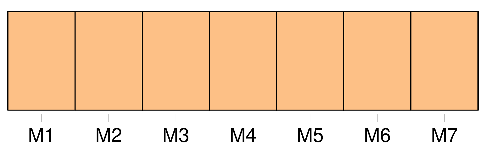
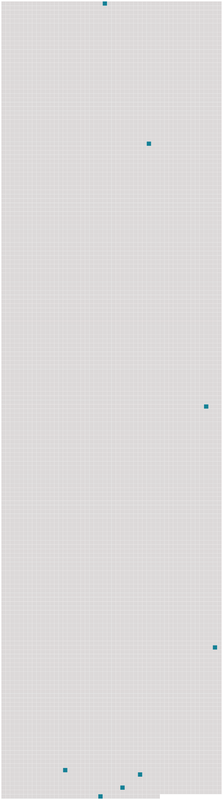

Longueur nb maillons : 8 mentions |
 |
Lors de l'inauguration, l'amicale des commerçants du village était fortement représentée et venait ainsi encouragée ce nouveau commerçant à qui [nous] souhaitons également pleine réussite. [60 phrases]
Toutes les superbes fresques que l'on peut admirer sont en quelque sorte les « BD » de l'époque », [nous] explique M. Pellard pour qui l'art Roman est presque un « sacerdoce ». [103 phrases] [on] constate une fois de plus que la concertation avec cette direction est quasiment inexistante. [103 phrases] C'est la première fois qu'on associe les écoliers à la manifestation « et [vous] savez, précise une responsable de la manifestation, partout où l'on a tenté l'expérience, on s'est rendu compte que les enfants avaient un goût très sûr!! [47 phrases] [On] regrettera simplement, et ce n'est pas qu'un détail, le manque d'application défensif de Lokhmanchuk ( 4 fautes après 12 minutes ). [2 phrases] Face à une formation gravelinoise dont [on] connaît la force de frappe, les Nancéiens ont fait preuve d'un cœur gros comme ça. [7 phrases] [On] se disait que Nancy n'avait fait que retarder l'échéance et que Zianveni et les autres allaient progressivement décrocher. [4 phrases] Ce rien, [on] l'a dit, prit la forme d'un passage en force. |
 |
Il est possible de télécharger la ressource sur la page Ortolang |
Si vous avez des questions ou vous voyez des erreurs, merci d'envoyer un mail à silvia.federzoni89@gmail.com |